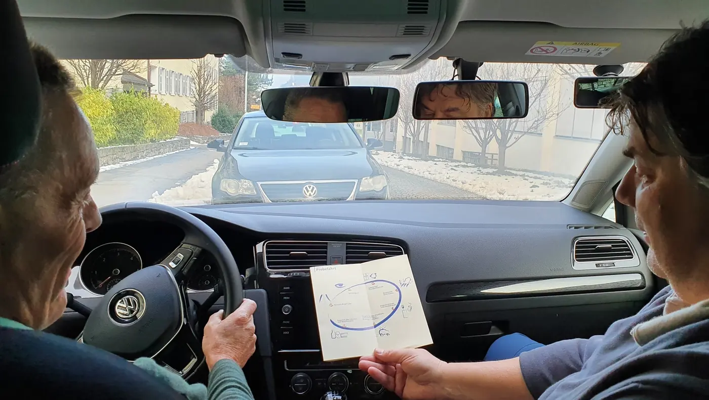

«Intensiv»
Für gute Voraussetzungen
CHF 1’23216 Lektionen
- 12 Lektionen Vor-, Grund- und Hauptschulung
- 4 Lektionen Perfektionsschulung
CHF 77 pro Lektion
Bitte einsteigen: Fahrschule Hans Zberg
Persönlich mit Hans Zberg, vom Lernfahrausweis bis zur Prüfung. Mit eigenen Übungsheften und drei Paketen zum Fixpreis, abgestimmt auf die neue Fahrprüfung ab 2027.
Angebot
Grundfahrausbildung für das Auto (Kategorie B) und Weiterbildungskurse, alles aus einer Hand.
Vom ersten Meter bis zur Prüfung, in vier Teilen von der Vorschulung bis zur Perfektionsschulung.
Doppelkreisel, Fahrstreifen und Lichtsignale sicher meistern und Fahrassistenzsysteme richtig anwenden.
Der VKU in Altdorf, beim Café «zum grünen Haus» an der Gotthardstrasse 4.
Grundfahrausbildung nach Heft
Alle Lektionen dauern 60 Minuten. Je mehr Lektionen, desto tiefer der Preis pro Lektion.
«Intensiv»
Für gute Voraussetzungen
CHF 1’23216 Lektionen
CHF 77 pro Lektion
«Stressfrei»
Für normale Voraussetzungen
CHF 1’80024 Lektionen
CHF 75 pro Lektion
«Geduldig»
Wenn du dir mehr Zeit lassen willst
CHF 2’33632 Lektionen
CHF 73 pro Lektion
Zu jedem Paket kommen CHF 250 dazu: CHF 100 für Versicherung, Administration und Unterrichtsmaterial sowie je CHF 75 für das Einfahren und das Prüfungsfahrzeug. Ratenzahlung ist mit einer Abzahlungsvereinbarung möglich. Unsicher, welches Paket passt? Bei der Anmeldung kannst du die Wahl auch mir überlassen.
Neu ab 2027
Ab Januar 2027 werden die Theorie- und die Fahrprüfung umfangreicher, vor allem wegen der neuen Fahrassistenzsysteme wie ACC, Spurhalteassistent und Blind Spot. Darum habe ich meine Ausbildung angepasst: Wir orientieren uns an meinen eigenen Heften, mit Übungen und QR-Codes für das private Fahren.
Seit 2021 kannst du den Lernfahrausweis mit 17 lösen. Wer ihn vor dem 20. Geburtstag erhält, durchläuft eine Lernphase von 12 Monaten. Mein Tipp: Zu Beginn von Teil 1 und von Teil 3 je einige Lektionen bei mir, dazwischen privat üben.
Weg zum Lernfahrausweis
Der Kursausweis darf höchstens 6 Jahre alt sein.
Beim Augenarzt oder Optiker, höchstens 24 Monate alt.
Gesuch frühestens 1 Monat vor dem 17. Geburtstag, dann die Basistheorie am Computer.
Mit dem Lernfahrausweis üben, bei mir und privat. Dazu der VKU mit 8 Stunden.
Rund 60 Minuten, im Prüfungsfahrzeug der Fahrschule.

Fahrberatung für Senioren
Seniorendrive ist keine Prüfung, sondern eine freiwillige Fahranalyse mit Ratschlägen. Das Ziel: Sie bleiben so lange wie möglich sicher mobil und entscheiden selbst, wann der richtige Zeitpunkt für die Abgabe des Ausweises gekommen ist.
Dein Fahrlehrer
Ich bin Hans Zberg, Fahrlehrer in Altdorf und ausgebildeter Fahrberater für Seniorinnen und Senioren. Bei Fragen ruf mich einfach an.

Melde dich an oder ruf mich an. Sobald deine Anmeldung da ist, können wir den ersten Fahrtermin abmachen.